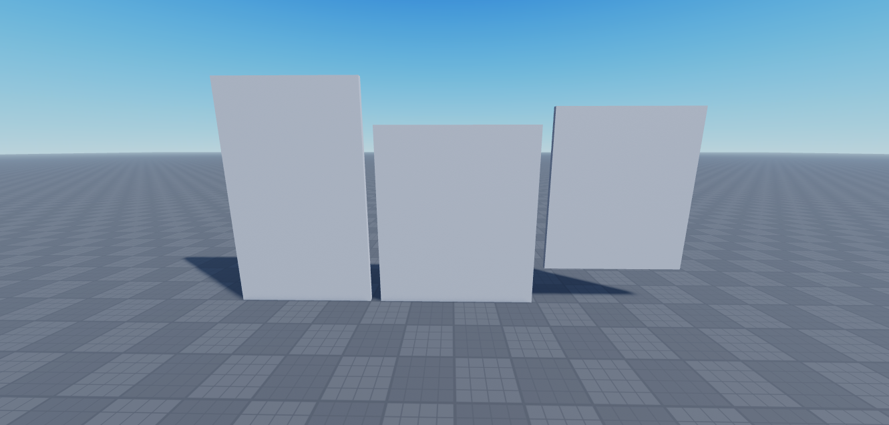
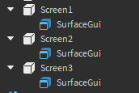
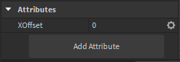
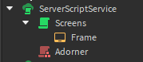

What is a screen adorner?
Screen adorner allows you to display 1 frame on multiple parts while using SurfaceGuis, it's mostly used for GIFs

Download
Click the button below to get redirected to Roblox's library page. Take the asset from there and use
the Toolbox in Studio to insert it into your game.
You can also just copy the code from Github Gist and paste it into a ModuleScript
Usage
The module has only 1 function - adorner:Adorn()
The functions requires 4 parameters:
- Frame - The frame that will be replicated on all screens
- Screens - A table of SurfaceGuis the frame will be copied to
- TopMarker - A Vector3 or a number representing the very top of the top-most screen
- TotalFrameSize - A UDim2 representing the size of all of frames combined
The SurfaceGuis need a XOffset attribute with the X (left-right) offset of that screen in pixels (distance from the left-most side of any screen to the left side of current screen)
The SurfaceGuis can also optionally include a YOffset attribute which tells the adorner how far to offset that screen downwards (useful for screens that are on the floor)
local adorner = require(game.ServerScriptService.ScreenAdorner)
local surfaces = {workspace.Screen1.SurfaceGui,
workspace.Screen2.SurfaceGui}
local marker = workspace.Marker.Position
local totalSize = UDim2.fromOffset(1000, 300)
adorner:Adorn(script.Frame, surfaces, marker, totalSize)
Removing the frames
The Adorn() function returns an object with a :Destroy() function which will remove the frame from all screens
... // The stuff from above
local adorned = adorner:Adorn(script.Frame, surfaces, marker, totalSize)
task.wait(10)
adorned:Destroy()
Examples
Below are links to some examples which might be more helpful than all of the explanations above. You can press the button on a game's page to access the game in Studio
The Offset + Sizing example shows the process of calculating the offsets for each screen and the final size
The GIFs example shows how to use the adorner with other modules, for example the the GIF Player
Tutorial
Let's use the adorner on the screens from the Offset + Sizing example. This is what we'll start with:
The screens are named Screen1, Screen2 and Screen3 respectively. Screens 1 and 3 are 12.5 studs in width, while the 2nd screen is 14.5 studs in width. The first screen is 20.5 studs high
First, let's add a SurfaceGui to each screen so we can display stuff on them. We're not going to change any properties here but if you might want to change LightInfluence to 0 to make the screen glow in the dark
Now let's add a XOffset attribute to each of the GUIs. This attribute will tell the adorner how far to the right each screen is.
Now that every screen has its own XOffset attribute, we can start calculating them. Note that the position is measured from the top left corner of a screen, not the center. The attribute also uses pixels, not studs
The first screen is... the first screen, so it doesn't need to be offset. We'll keep the XOffset at 0
The second screen is moved to the right by the size of the first screen and the gap between them, so the XOffset should be size_of_first_screen + gap. The attribute uses pixels, and by default GUIs have 50 pixels per stud, so the final result will need to be multiplied by 50. The screen is 12.5 studs in width and the gap between the screens is 1 stud, so the final XOffset for the second screen is (12.5 + 1) * 50 which is 675.
The same logic applies to the third screen except this time there are 2 screens before it (and the second one is bigger) so the XOffset is (12.5 + 1 + 14.5 + 1) * 50 which is 1450
After filling out the XOffsets, the screen setup is done. Now we need to write some code to actually tell the adorner to show stuff on those screens.
Let's start by inserting the Adorner module into ServerScriptService. Then let's make our own script which can be named whatever you want. Let's also create a Frame inside of the script. This frame will be copied to all screens and you should use it as "The Screen". We'll give it a Size of 1, 0, 1, 0 so it covers everything
Let's open the script and write the code required for everything to function. First let's import the adorner module so we can use it
local adorner = require(game.ServerScriptService.Adorner)The adorner has 1 function, :Adorn() which takes 4 parameters. First we need to specify the frame that is going to get copied onto the screens. In our case it's the frame that's inside the script, so
adorner:Adorn(script.Frame)We also need to specify the screens that the frame is going to get copied to. In our case it's the 3 screens in Workspace, so
adorner:Adorn(..., {workspace.Screen1.SurfaceGui, workspace.Screen2.SurfaceGui, workspace.Screen3.SurfaceGui})Then we need to specify the Y position of the top point of the screens. In our case it's 20.5, so
adorner:Adorn(..., 20.5)Finally, we need to specify the total size of all screens in pixels. For the X axis, we can just add the 3rd screen's size to its XOffset to get that, so we end up with 1450 + 12.5 * 50 which is 2075. The first screen covers the entire Y axis so we can multiply its Y size by 50 to get the total Y size which is 1025. Once we have both axes, we can insert it into the script like so
adorner:Adorn(..., UDim2.fromOffset(2075, 1025))After splitting the code into a few lines, the entire script looks like this:
local adorner = require(game.ServerScriptService.Adorner)
adorner:Adorn(
script.Frame,
{ workspace.Screen1.SurfaceGui, workspace.Screen2.SurfaceGui, workspace.Screen3.SurfaceGui },
20.5,
UDim2.fromOffset(2075, 1025)
)And it's done! Everything that will be inserted into our frame will get automatically copied to all screens